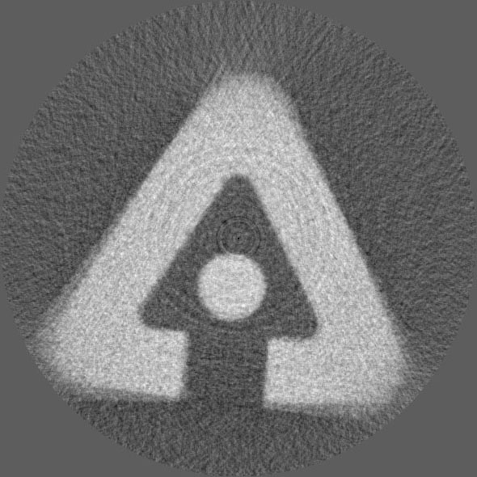

Last Updated 03/08/2002
My task at Argonne National Laboratory in Illinois was to develop an application to run an X-Ray/CT system. In an X-Ray/CT system, you take side shots of an object and then reconstruct a view of the image. For example, the image below was not photographed from above, but was instead scanned from the side, rotating the image a small degree each time. These side shots were then combined to produce the below view. The reason that this can be done is because an X-Ray image shows the density of the object being scanned. Using complex algorithms, these density graphs can then be combined to produce a 3D likeness of the image.
The environment that I used for development was LabView 4.01. The camera was an 8-bit Sony CCD. The frame grabber card was a PCI-IMAQ (image acquisition) card from National Instruments. The platform was a Pentium 150 with 128MB RAM. The stage was controlled by a Parker Compumotor system and had four axes of motion. The OS was Windows 95.
The image reconstruction was handled by existing routines that had been written in FORTRAN 77 and had been recompiled for the 32-bit OS.
Here is the first composite image that was produced on the completed system. The object was a plastic composite that had been produced on a rapid prototype machine. The design is the official ANL logo.
